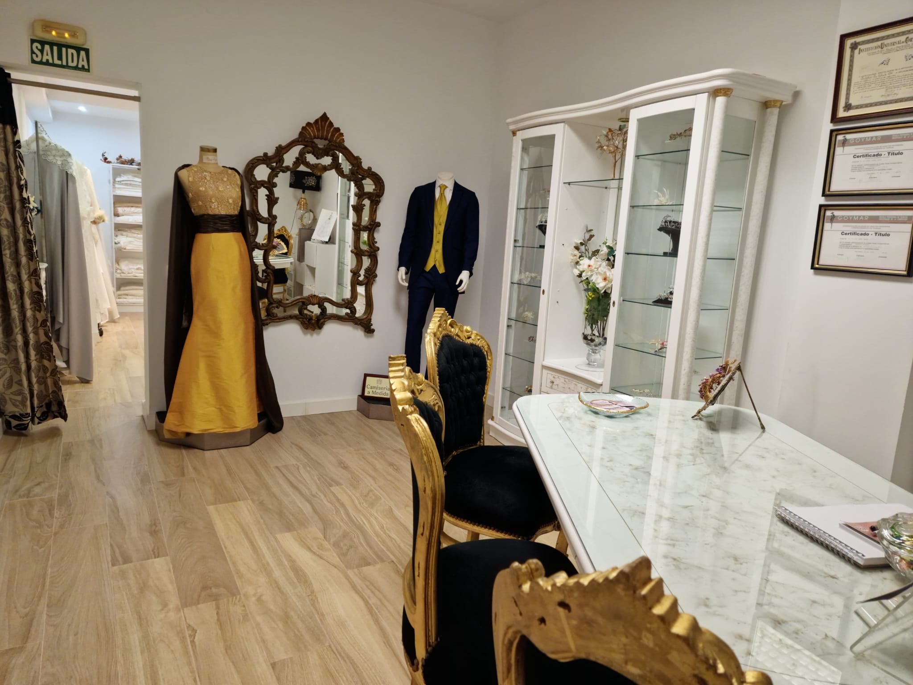

01
Paso 01 · Capturando tu Visión
Consulta Inicial
1. Consulta Inicial: Capturando tu Visión
El viaje comienza con una consulta personalizada en nuestro acogedor estudio. Durante esta sesión, nos tomamos el tiempo para conocerte, comprender tus gustos y explorar tus ideas y deseos. Hablaremos sobre los estilos que te inspiran, las telas que amas y cualquier detalle especial que desees incorporar. Nuestro objetivo es capturar la esencia de lo que deseas y transformarla en un diseño único.
- Encuentro íntimo: Dedicamos todo el tiempo necesario a conocerte y explorar tus deseos.
- Esencia a medida: Definimos estilos de inspiración y las telas que amas para crear una pieza única.

Consulta personalizada en nuestro estudio
Madrid · Atelier
Paso 01 / 06